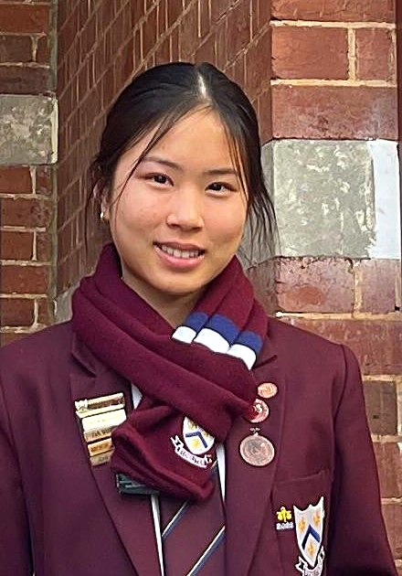
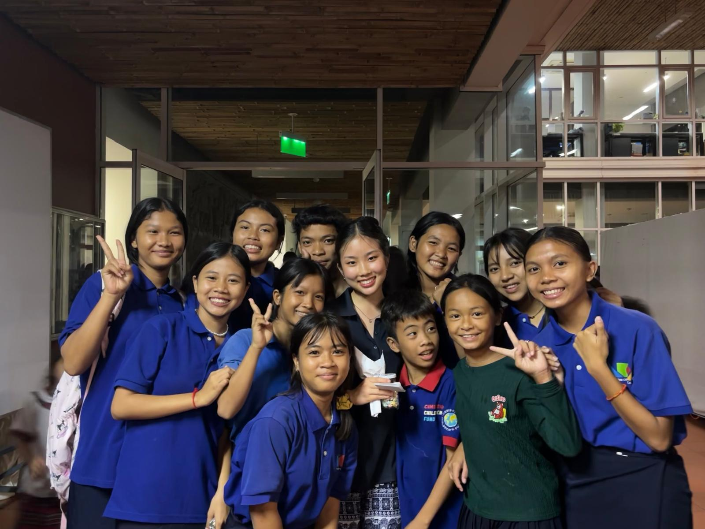

St Mary's Anglican Girls' School & Christ Church Grammar School
This December, Kayley is going to Phnom Penh.
She's joining twenty-three other students for ten days of service with the Cambodian Children's Fund.
Departing Perth Friday 4 December, returning Monday 14 December 2026.
Support Kayley's Trip
The place she's going
A garbage dump, a Hollywood executive, and 45 children
In 2003, a film executive named Scott Neeson took a five-week holiday to Cambodia. He ended up at Phnom Penh's municipal rubbish dump, where roughly 1,500 children lived and worked, scavenging for anything they could sell or eat. Neeson went home, resigned as president of 20th Century Fox International, and moved to Phnom Penh to do something about what he'd seen. That was 2004. The Cambodian Children's Fund — CCF — started with 45 children.
It has never stopped growing. CCF now runs schooling for more than 2,000 children, alongside healthcare, nutrition and family-support programs that reach as many as 12,000 people a year across some of Phnom Penh's poorest communities. More than two-thirds of the children in CCF's care once worked as scavengers themselves — the way Neeson found the first of them.
2,000+
children in CCF's education programs
~12,000
people reached yearly through healthcare, family support & community programs
97/100
Charity Navigator's independent rating — its top four-star mark
CCF also reports that 85 cents of every dollar donated goes directly to programs on the ground — a figure from CCF's own reporting, though it lines up with the strong marks it separately earns from Charity Navigator, an independent U.S. charity evaluator.
CCF isn't an orphanage. Its model is built around keeping children with their families and communities wherever possible — a child does better with people around them, even in hardship, than without. Where a child genuinely has no parents, a network of community "Grannies" — respected elders who foster children and keep Cambodian traditions alive — help fill that gap.
One name worth knowing: Sophy. At 11, she was living on the dump, helping raise her younger siblings, and hadn't yet started school. She was among the first children CCF took in — and in 2018 was awarded a full scholarship to the University of Melbourne, going on to graduate with a degree in media communications and international relations. Two decades of this work have made stories like hers less of an exception.
Why Kayley
She watched her sister come home changed
Two years ago, Kayley's older sister Noelle went on this same trip. She came home with hundreds of photos and story after story — and something in her had shifted. Kayley noticed it before anyone had to point it out: how much more grateful Noelle seemed for an ordinary life in Perth, how differently she talked about the things our family has always just taken for granted.

What stayed with Kayley wasn't the poverty in Noelle's stories. It was the joy. Some of the children Noelle spent her days with have no parents at all, and they were still some of the happiest, most affectionate kids Noelle had ever met — a kind of happiness that didn't need a shared language to come through. A basketball, a shared meal, an afternoon of mucking around together did most of the talking.
This December, Kayley wants to see it for herself.
"I'm grateful to have the opportunity of not only contributing through fundraising, but to spend time with the students and be involved in the schools we're supporting."
— Kayley
Most days will look the same: mornings and afternoons in CCF's classrooms helping teachers, basketball at every break, serving and washing up at mealtimes — building toward a traditional Cambodian dance the group learns and performs for the whole school on their last day.
Where your gift goes
On top of the trip itself
The trip itself — flights, accommodation, each student's own costs — is covered separately by every family. What Kayley is fundraising for sits on top of that, going directly toward school development and resources for the children at the CCF schools her group will be working in. However much you're able to give goes straight there.
It's a small addition to a much bigger effort. CCF's education, healthcare, housing and family-support programs are funded the same way — one gift at a time, from people who've never been to Steung Meanchey and likely never will. That's exactly what makes it work.
Support Kayley's TripThis links to Kayley's page on St Mary's and Christ Church's official CCF campaign, run through Raisely.